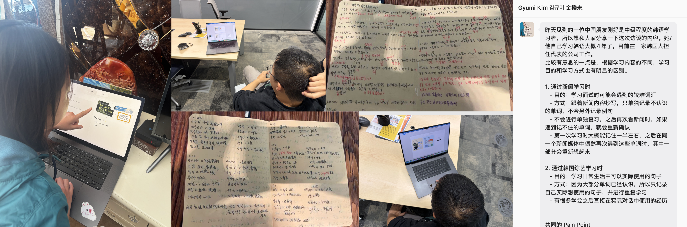
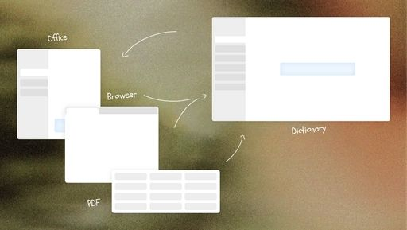
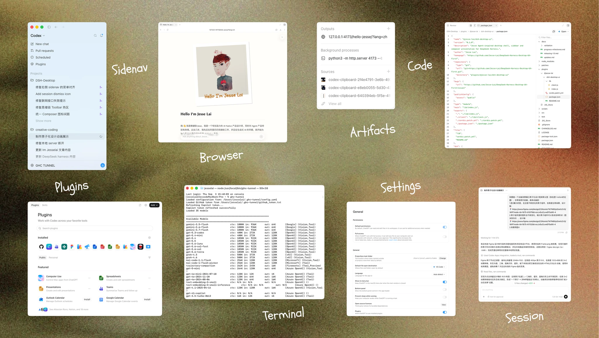
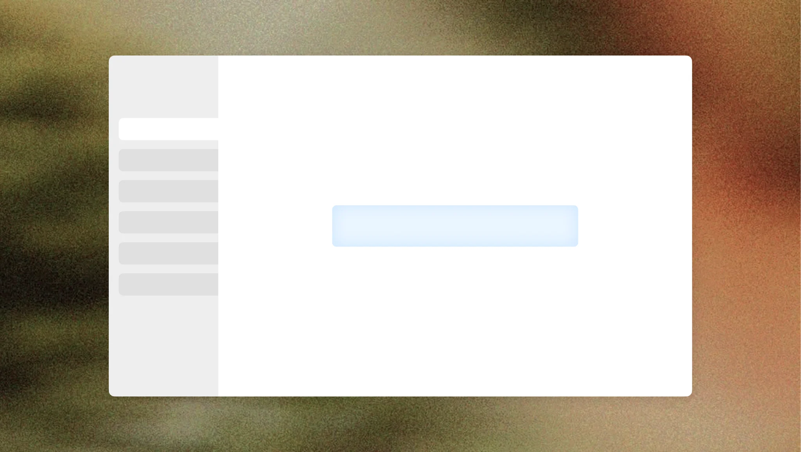
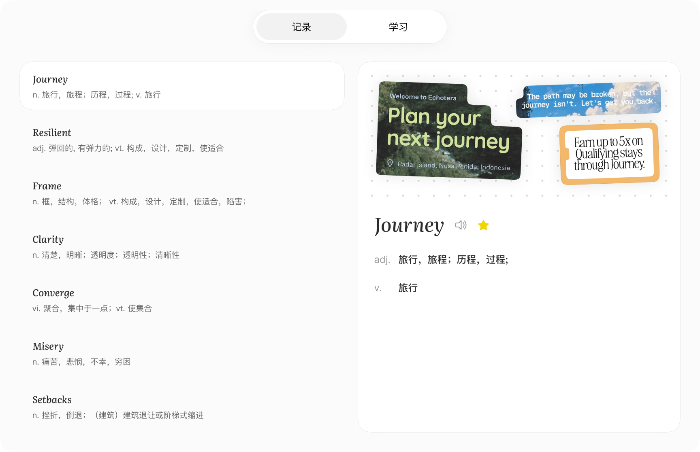
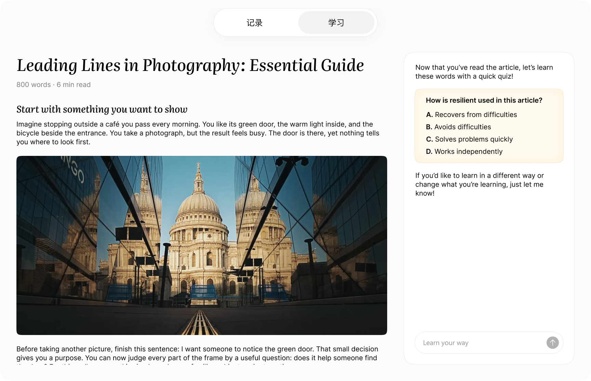
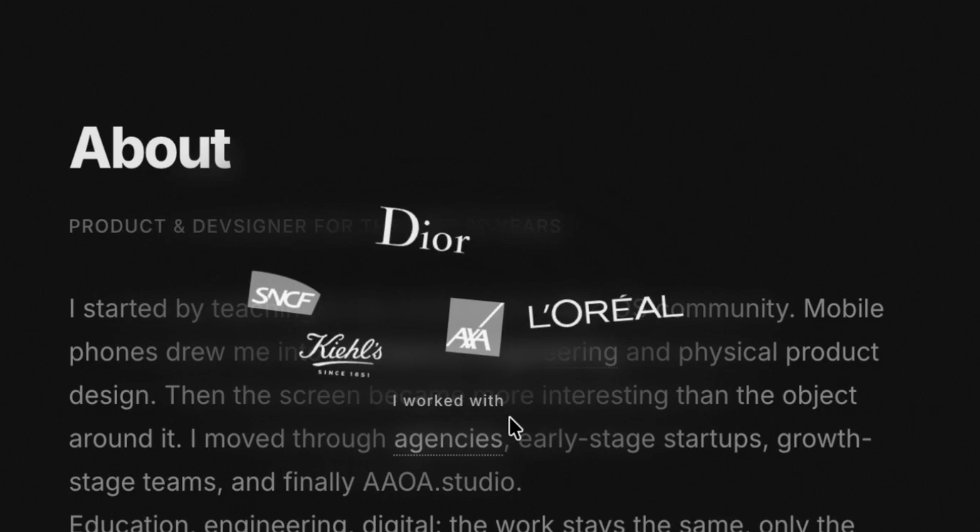
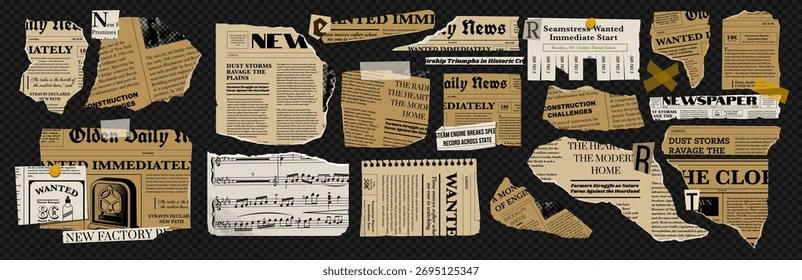

中国约有超过4亿人正在学习外语，但目前主流的语言学习的工具和方法还是前AI时代的。用字典查词、单词表记单词、读枯燥的阅读理解和听力，语言学习仍然是一个头疼的过程。
拖动照片可移动位置，悬停或点击可播放动画。键盘方向键移动，Escape 复位。
A WORD YOU CAME ACROSS
serendipity
/ˌserənˈdɪpəti/ noun
不期而遇的美好；意外发现的幸运
回到遇见它的地方
“Some of the best discoveries
begin with serendipity.”
原句与语境，一起留下。
Language Bubble · macOS + iOS 原生项目Translation → Context → Learning
背景
核心用户群
AI+教育的话题很大，我想从一个自己每天亲身经历的痛点开始入手。最优先服务的是已有一定语言基础、且日常会持续接触目标语言的用户，比如：
- 在外企工作
- 需要读国外文献的学生
- 广大留学生群体
- 喜欢某个国外文化
- 使用 Mac OS 系统
这些用户每天都在查词和记词，接触语言环境。这个需求高频、真实、持续。
有价值的场景
除了自己的亲身经历，我对身边学习不同外语的用户们进行了调研（参与者为学英语的中国人，和学中文的韩国人）

根据大家的反馈，我总结了一些高频痛点。
语言学习，卡在哪里？
头脑风暴 · 待验证🧑🏻💻语言学习者
- 单词背了又忘
- 找不到感兴趣、
难度又合适的材料 - 每天读很多，
真正留下的很少 - 筛选、整理材料
太花时间 - 学习时间零碎，
总被打断 - 收藏一堆资料，
却没再打开 - 看得懂，
开口却用不出来 - 看不到进步，很难坚持
我发现了2个高频痛点还未被解决：
- 拿着单词书背单词太痛苦，脱离了场景
- 学习的资料和生活中看到的语料完全不同
Agent 有机会解决这两个痛点
我们先回忆一下一个经典的学习流程：
- 遇到一个不会的单词
- 复制它
- 打开有道词典
- 粘贴到搜索框
- 点击搜索
- 查看释义
- 点击收藏单词本
- 一周后背单词，但完全想不起来在哪见过它们

这个学习流程里，可以拆解出 2 个本质需求：
- Context 收集（记录见过的语料）
- 结合 context 的个性化学习（高效有趣的学习这些语料）
设计原则
因此我提出两个设计原则，这也是 Agent 化以后，产品体验会发生的根本变化：
- Context based Agent
意味着 Agent 不能只是传统的App形式，等待用户去投喂 Context, 必须在用户身边，无感的帮用户记录这些 Context
- 不学习语言，而是用语言去学爱好
利用 AI 生成能力和收集到的用户 Context，Agent 可以帮用户创作出用户喜欢的学习素材
会放弃的场景
我不会想 “一次覆盖所有语言学习场景”，MVP 版本优先只解决真实、高频、最痛的核心用户需求：
- 记录 Context
- 围绕这些 Context 去学习用户感兴趣的内容
最难的产品问题
结合之前的痛点场景，我觉得有几个难解决的问题：
- 如何在 macOS 和不同应用之间低打扰地收集用户遇到的语料。用户的学习场景很碎，可能发生在浏览器、PDF、聊天或其他应用里；如果每次都要求手动添加，体验会很重，但如果过度主动采集，又容易打扰用户或破坏信任。
- 如何让用户背单词的效率提升？
- 如何让 Agent 产出的学习内容真的让用户愿意学。生成内容本身不难，难的是让内容既和用户语料、兴趣有关，又足够有吸引力，能让用户持续阅读、收听或互动。这本质上同时是教育设计和游戏化设计的问题。
其中一个问题，我的解决方向是：
- 利用 macOS Accessibility 能力读取当前前台应用信息。
- 当用户择某段文字时，自动触发查词、翻译，并截取单词附近的屏幕内容 Context。
- Agent 会把“单词 + 语料 + 场景截图”一起记录下来，减少用户手动添加负担。
- 后续再把这些记录加工成学习资料，形成从查词到记忆再到复用的闭环。
2. 设计方案 - 交互设计 + Demo
策略1: Agent 与 Context 深度结合
展示如何收集语料
策略2: 用语言，学爱好
计划与进度：
拆解任务和当前进度：引导用户结构化输入

渐进式生成降低焦虑：
先展示大纲，再展示文字，再生图片，最后生成可交互artifact（一边继续思考，一边开始回答。）
中途干预：
steer、暂停生成（参考codex）
结果不符合预期：
节省token：思维链重新推理
失败：
失败时-没有token了：
失败：不满意结果
选择block单独修改
失败时-网络：
完成：
完成时：展示互动题目
真实 / Mock：
- 真实：右侧对话内容；单词列表中的单词（由 Agent 实际收集）。
- Mock：文章生成结果；学习页面中的拼贴画。
- 原因：文章生成要和教育策略、单词与场景结合方式一起调；拼贴画要处理截图并做视觉编排，短时间内更适合先用理想化结果展示。
如果有更多时间：
- 把文章生成从概念展示做成更稳定的教育内容生成链路。
- 把学习页拼贴画做成真实可运行的生成或规则化排版能力。
使用的 AI 工具：
- 主要使用 Codex 作为 AI 开发工具，用来辅助实现和迭代这个交互原型。
- Codex：用于前期头脑风暴、快速原型搭建，以及后续把设计实现成可运行原型。
- Figma：用于进入视觉设计精细化阶段后，完成高保真原型和细节设计。
- 整体 workflow：先用 Codex 快速探索和搭原型，再用 Figma 打磨视觉与细节，最后再交回 Codex 实现。
- 继续优化截图场景进入产品后的视觉呈现，不只是放一张图，而是把以文字为主的截图做成更有设计感的学习卡片或拼贴版式。
- 参考报纸拼贴等视觉形式，让语料场景既可读又更美观。
- 重点打磨学习内容生成，这是项目里最难的一部分：需要结合教育学、游戏化设计和用户测试，验证 AI 生成的文章、播客和互动游戏是否真的让用户愿意用、并且能帮助学习。
Agent 应该做的，是围绕两个核心目标展开：一是帮助用户把单词和真实使用场景关联起来，二是基于这些语料和用户兴趣生成学习内容，让用户在感兴趣的内容里使用语言。它不应该脱离用户记录过的场景和兴趣去天马行空地产生不相关内容，也不应该为了“看起来聪明”输出专业性不足、幻觉很多的学习材料。
- 应该做：围绕真实语料场景和用户兴趣生成学习内容
- 不应该做：脱离场景乱生成，或输出专业度不足、幻觉很多的内容
- 直接执行：低风险、低成本、符合用户当前学习目标的操作
- 先询问用户：会影响信任、带来明显成本或可能中途失败的操作
- 例子：高 token 消耗的生成任务，应先提醒用户缩小范围、调整形式或补充 token
artifact时效性 agent主动性 学习内容/游戏化：让用户更乐于学习 截图和拼贴画算法
3. UI 能力
2. Design System 思路



可视化：单词可以组成无数种 artifact
- 核心元素 1：Word。每个单词都是一个基础对象，包含释义、解释和 context / 场景。
- Word 会在不同界面里复用，比如查词页、单词本、文章内容里。
- 核心元素 2：Artifact（学习产物）。它可以是文章、播客、互动游戏等，由单词和语料进一步生成。
- 学习页面更像一个“书桌”，由不同 Artifact 组成；新的、旧的内容都可以被摆放和再次拿起使用。




